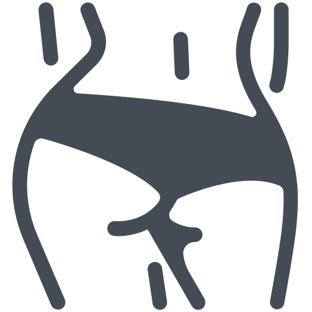

<mat-toolbar color="primary" class="toolbar-container mat-elevation-z4">
  <mat-icon class="back" (click)="goBack()" [ngClass]="{'visible': visible}">keyboard_backspace</mat-icon>
  <div class="logo-container">
    

    <span class="toolbar-title"
          [routerLink]="[RoutePath.Jobs]"
    >
      SexyJobs
    </span>
  </div>

  <div class="user-menu">
      <button mat-icon-button>
        <mat-icon [routerLink]="[RoutePath.Jobs]">work</mat-icon>
      </button>
    <button mat-icon-button>
      <mat-icon [routerLink]="[RoutePath.Profile]">person</mat-icon>
    </button>
  </div>

</mat-toolbar>
<router-outlet></router-outlet>

